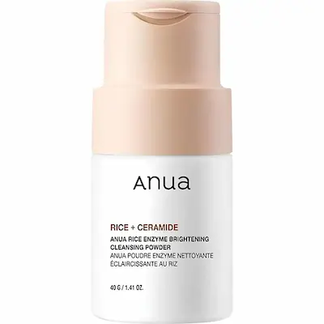
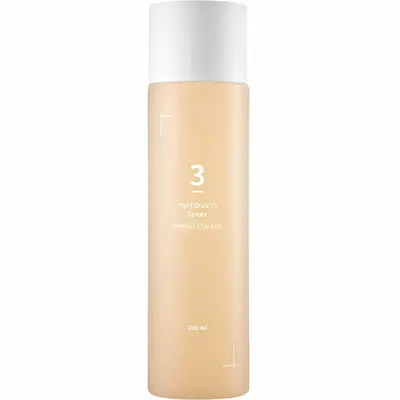
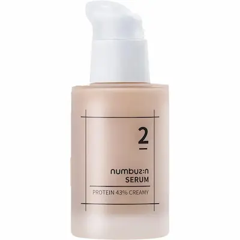
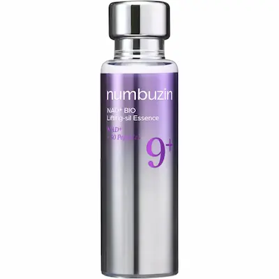
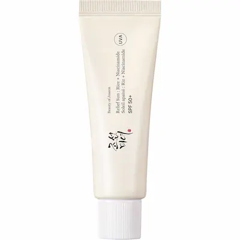

numbuzin No.9 NAD+ Bio Lifting-sil Essence — эссенция с NAD+ и 50 пептидами для упругости кожи
Корейская эссенция для тех, кто хочет уделить особое внимание упругости, гладкости и ухоженному виду кожи. Разбираем формулу с NAD+ и комплексом из 50 пептидов, знакомимся с ключевыми компонентами и их ролью в косметическом уходе. Рассказываем, кому может подойти средство, как включить его в ежедневную бьюти-рутину и с чем сочетать для полноценного ухода за кожей.
Почему эта эссенция заслуживает внимания?
numbuzin No.9 NAD+ Bio Lifting-sil Essence — корейская эссенция для тех, кто хочет уделить больше внимания упругости, гладкости и ухоженному виду кожи. Если кожа выглядит уставшей, кажется менее эластичной или на ней становятся заметнее мелкие морщинки и неровности текстуры, стоит обратить внимание на средства с комплексным подходом к уходу. Здесь интерес представляет сочетание NAD+ и комплекса из 50 пептидов.
NAD+ — молекула, участвующая во многих важных клеточных процессах, а пептиды представляют собой короткие цепочки аминокислот, которые широко используются в косметических формулах. Их сочетание делает эссенцию интересным вариантом для ухода за кожей с признаками возрастных изменений. При этом присутствие этих компонентов в косметике не означает, что средство способно восстановить клеточные процессы или обеспечить эффект профессионального лифтинга. Результат зависит от всей формулы, регулярности применения и индивидуальных особенностей кожи.
В этом обзоре подробно разберём состав numbuzin No.9 NAD+ Bio Lifting-sil Essence, познакомимся с ролью NAD+, пептидного комплекса и других ухаживающих компонентов. Выясним, кому может подойти эта эссенция, как правильно включить её в ежедневную бьюти-рутину и с какими средствами сочетать, чтобы обеспечить коже полноценный уход.
Текстура и первое использование
numbuzin No.9 NAD+ Bio Lifting-sil Essence — корейская эссенция для тех, кто хочет сделать ежедневный уход более комплексным и уделить особое внимание упругости, гладкости и ухоженному виду кожи. При выборе такого средства важны не только NAD+ и комплекс из 50 пептидов, но и то, насколько комфортно эссенция ощущается на коже и сочетается с остальными этапами ухода.
Эссенции обычно используют как дополнительный этап между тонизированием и нанесением крема. Они помогают дополнить уход увлажняющими и другими ухаживающими компонентами. Если кожа выглядит уставшей, кажется менее эластичной или нуждается в дополнительном увлажнении, такая ступень ухода может стать полезным дополнением к привычной рутине. Однако плотность, скорость впитывания и финиш именно этой формулы лучше оценивать непосредственно при нанесении: ощущения могут различаться в зависимости от типа кожи и количества средства.
Эссенция может заинтересовать тех, кто подбирает уход для кожи с признаками возрастных изменений и хочет дополнить привычную рутину пептидными компонентами. При сухой коже особенно важно сочетать её с подходящим увлажняющим кремом, а для комбинированной и жирной кожи учитывать общую насыщенность ухода и собственные ощущения после нанесения. Если кожа чувствительная, вводи новое средство постепенно и наблюдай за реакцией.
При первом использовании нанеси небольшое количество эссенции на очищенную кожу лица после тонера, если он входит в твою рутину. Равномерно распредели средство, избегая попадания в глаза, и продолжи уход подходящим кремом. Утром заверши рутину солнцезащитным средством широкого спектра действия с SPF 30 или выше. Если появятся выраженное жжение, раздражение или стойкое покраснение, прекрати использование.
Важно помнить: комфортная текстура и хорошая переносимость индивидуальны. Даже если эссенция подходит другим людям, это не гарантирует такой же реакции и результата для каждого типа кожи.


С какими средствами сочетать numbuzin No.9 NAD+ Bio Lifting-sil Essence?
numbuzin No.9 NAD+ Bio Lifting-sil Essence можно сделать центральным этапом ухода, направленного на увлажнение, гладкость и поддержание ухоженного вида кожи. Эссенция с NAD+ и комплексом из 50 пептидов хорошо вписывается в многоступенчатую корейскую рутину. При этом необязательно использовать сразу много продуктов: достаточно подобрать очищение, дополнительные увлажняющие средства и защиту от солнца.
1. Очищение — Anua Rice Enzyme Brightening Cleansing Powder
Пудра для умывания Anua Rice Enzyme Brightening Cleansing Powder подойдёт в качестве первого этапа ухода. Очищение помогает подготовить кожу к нанесению последующих средств, удаляя загрязнения и остатки косметики. Используй продукт согласно инструкции и не забывай, что даже мягкое очищение не должно оставлять ощущения сильной сухости или стянутости.
2. Тонер — numbuzin No.3 Super Glowing Essence Toner
Если хочется добавить в рутину ещё один увлажняющий этап, можно обратить внимание на numbuzin No.3 Super Glowing Essence Toner. Наноси тонер после очищения, а затем переходи к основной эссенции No.9. Оба средства относятся к уходу numbuzin, но выполняют разные функции в рутине. Если кожа предпочитает минималистичный уход, тонер можно пропустить.
3. Основной этап — numbuzin No.9 NAD+ Bio Lifting-sil Essence
Именно эта эссенция становится главным продуктом нашей подборки. Формула с NAD+ и комплексом из 50 пептидов ориентирована на уход за кожей, которой хочется придать более гладкий и ухоженный вид. Наноси средство после тонера или сразу после очищения, если не используешь дополнительные этапы. Количество и способ применения лучше сверить с инструкцией производителя.
4. Дополнительный уход — numbuzin No.2 Protein 43% Creamy Serum
Для завершения ухода можно рассмотреть numbuzin No.2 Protein 43% Creamy Serum. Это ещё одно средство бренда, которое можно подобрать в зависимости от потребностей кожи и желаемого уровня питания. Перед совместным использованием оцени, комфортно ли коже такое сочетание: если появляется ощущение тяжести или избыточного количества слоёв, оставь в рутине только необходимые продукты.
5. Солнцезащита — Beauty of Joseon Relief Sun: Rice + Probiotics SPF50+ PA++++
Утром заверши уход солнцезащитным средством Beauty of Joseon Relief Sun. SPF50+ PA++++ обеспечивает защиту от UVA- и UVB-излучения при правильном нанесении. Это важный этап ежедневной рутины, особенно если ты уделяешь внимание профилактике фотостарения и появлению пигментных пятен. Наноси средство в достаточном количестве и обновляй его согласно инструкции, особенно при длительном пребывании на улице.
Как выстроить уход?
Утром: Anua Rice Enzyme Brightening Cleansing Powder → numbuzin No.3 Super Glowing Essence Toner → numbuzin No.9 NAD+ Bio Lifting-sil Essence → Beauty of Joseon Relief Sun SPF50+ PA++++.
Вечером: очищение → numbuzin No.3 Super Glowing Essence Toner при необходимости → numbuzin No.9 NAD+ Bio Lifting-sil Essence → numbuzin No.2 Protein 43% Creamy Serum, если коже требуется дополнительный уход.
Необязательно использовать все продукты одновременно. Для начала достаточно очищения, эссенции No.9 и увлажняющего средства, которое подходит твоей коже. Утром обязательно добавляй солнцезащиту. Тонер и дополнительную сыворотку можно включать постепенно, наблюдая за реакцией кожи и комфортом каждого сочетания.
Подборка средств от Beauty Panda
Редакционная подборка Estetica Lens.
Подобрали корейские средства, которые могут дополнить уход с
numbuzin No.9 NAD+ Bio Lifting-sil Essence: очищение,
дополнительное увлажнение, уход с пептидами и защита от солнца.
Наличие и актуальные условия покупки можно уточнить
непосредственно у
BeautyPanda.

Anua Rice Enzyme Brightening Cleansing Powder
Очищение кожи
Пудра для очищения кожи перед нанесением последующих этапов ухода.

numbuzin No.3 Super Glowing Essence Toner
Дополнительный уход
Тонер для дополнительного этапа ухода перед эссенцией numbuzin No.9.

numbuzin No.2 Protein 43% Creamy Serum
Дополнительный уход
Дополнительное средство бренда numbuzin для более насыщенной многоступенчатой рутины.

numbuzin No.9 NAD+ Bio Lifting-sil Essence
Главный продукт обзора
Эссенция с NAD+ и комплексом из 50 пептидов для ухода за гладкостью и упругостью кожи.

Beauty of Joseon Relief Sun: Rice + Probiotics
Защита от солнца
Солнцезащитное средство SPF50+ PA++++ для завершающего этапа утреннего ухода.
Разбор состава numbuzin No.9 NAD+ Bio Lifting-sil Essence
Главная особенность numbuzin No.9 NAD+ Bio Lifting-sil Essence — насыщенная формула с NAD+, ниацинамидом и большим количеством пептидов. В составе также присутствуют увлажняющие компоненты, смягчающие вещества, ферментированные ингредиенты и антиоксиданты. Такое сочетание делает эссенцию интересной для ухода за кожей, которой хочется придать более гладкий, увлажнённый и упругий вид.
В опубликованных списках INCI от разных продавцов повторяются Nicotinamide Adenine Dinucleotide, Niacinamide, Sodium Hyaluronate, Beta-Glucan, Adenosine и многочисленные пептиды. Отдельного внимания заслуживает основа формулы: Glycerin, Polyglycerin-3, Butylene Glycol, Dimethicone, Shea Butter и другие смягчающие компоненты. Разберём основные группы ингредиентов и их роль в косметическом уходе.
1. NAD+ — один из главных компонентов формулы
Nicotinamide Adenine Dinucleotide (NAD+) — молекула, участвующая в различных биохимических процессах организма. В составе эссенции она выступает одним из ключевых компонентов концепции No.9, ориентированной на уход за возрастными изменениями и поддержание более ухоженного внешнего вида кожи.
Почему это важно: NAD+ делает формулу интересной для тех, кто выбирает косметику с необычными активными компонентами. Однако наличие этой молекулы в наружном средстве не означает, что эссенция восстанавливает клеточный уровень NAD+ или запускает процессы омоложения. Результат косметического ухода следует оценивать по состоянию кожи и её внешнему виду, а не переносить на продукт биологические функции молекулы в организме.
2. Пептидный комплекс — основа концепции Bio Lifting
В списках состава указаны многочисленные пептиды, среди которых Palmitoyl Tripeptide-5, Capryloyl Dipeptide-17, Acetyl Hexapeptide-8, Palmitoyl Tetrapeptide-7, Palmitoyl Tripeptide-1, Copper Tripeptide-1, Hexapeptide-11 и Pentapeptide-18. Также встречаются различные ди- и трипептиды, олигопептиды и полипептиды.
Почему это важно: пептиды используются в косметике для ухода за кожей с признаками возрастных изменений. Разные представители этой группы имеют различные свойства и назначение. Их сочетание формирует характерную особенность эссенции No.9 и объясняет акцент производителя на пептидном уходе.
При этом длинный список пептидов не означает, что каждый из них присутствует в высокой концентрации или обеспечивает самостоятельный заметный эффект. Точные проценты отдельных пептидов продавцы не указывают, поэтому оценивать их результативность только по количеству названий нельзя.
3. Niacinamide — ниацинамид
Niacinamide, или витамин B3, находится достаточно высоко в опубликованных списках INCI. Это один из хорошо известных косметических ингредиентов, который используют для ухода за неровным тоном, тусклостью и кожей с нарушенным ощущением комфорта. Он также помогает поддерживать защитный барьер и ухоженный внешний вид кожи.
Почему это важно: ниацинамид дополняет пептидную концепцию эссенции и делает формулу более комплексной. Он подходит для ухода за кожей, которой хочется придать более ровный и свежий вид. Точную концентрацию ниацинамида по одному списку INCI определить нельзя.
4. Glycerin, Polyglycerin-3 и другие увлажнители
В начале состава указаны Glycerin, Polyglycerin-3, Butylene Glycol и Propanediol. Это увлажняющие компоненты, которые помогают удерживать воду в верхних слоях кожи и поддерживать ощущение мягкости. Они также участвуют в формировании основы и сенсорных свойств средства.
Почему это важно: увлажняющая часть формулы помогает дополнить действие пептидного комплекса. При регулярном уходе кожа может выглядеть более гладкой и менее обезвоженной. Именно сочетание увлажнителей и смягчающих веществ важно для комфортного ежедневного применения эссенции.
5. Sodium Hyaluronate и Beta-Glucan
Sodium Hyaluronate — форма гиалуроновой кислоты, используемая в косметике для увлажнения кожи. Beta-Glucan — компонент, который ценят за его увлажняющие и успокаивающие свойства. Оба ингредиента присутствуют в опубликованных списках состава этой эссенции.
Почему это важно: эти компоненты дополняют увлажняющую основу продукта. Гиалуронат натрия помогает удерживать влагу, а бета-глюкан поддерживает ощущение комфорта кожи. Такое сочетание особенно интересно, если кожа склонна к сухости и обезвоженности.
6. Shea Butter, Hydrogenated Vegetable Oil и эмоленты
В формуле присутствуют Butyrospermum Parkii (Shea) Butter, Hydrogenated Vegetable Oil, Hydrogenated Poly(C6-14 Olefin), Pentaerythrityl Tetraethylhexanoate и Dimethicone. Эти ингредиенты относятся к смягчающим и смазывающим компонентам косметической основы. Они помогают уменьшать ощущение сухости, смягчать поверхность кожи и влияют на распределение средства.
Почему это важно: эссенция не ограничивается водной увлажняющей основой — в ней есть и компоненты, которые помогают поддерживать мягкость кожи. Благодаря этому формула может быть интересна не только тем, кто ищет пептидный уход, но и тем, кому важно ощущение комфорта после нанесения.
Если кожа склонна к жирности или не любит насыщенные средства, стоит начать с небольшого количества и оценить индивидуальную переносимость.
7. Adenosine и Adenosine Triphosphate
В составе указаны Adenosine и Adenosine Triphosphate (ATP). Аденозин широко применяется в косметике для ухода за кожей с видимыми признаками возрастных изменений. ATP — соединение, связанное с энергетическими процессами в живых системах; в косметической формуле его присутствие следует рассматривать как часть заявленного комплекса ингредиентов.
Почему это важно: аденозин дополняет направленность эссенции на уход за зрелой кожей и её более гладкий внешний вид. Однако наличие Adenosine и ATP не является доказательством того, что средство восполняет клеточную энергию или обеспечивает выраженный лифтинг-эффект.
8. Антиоксиданты: Resveratrol, Tocopherol и Glutathione
Среди дополнительных ухаживающих компонентов в списках встречаются Resveratrol, Tocopherol, Glutathione, Astaxanthin, Thioctic Acid и Ubiquinone. Это вещества, которые известны в косметике благодаря антиоксидантным свойствам и используются в формулах, ориентированных на уход за кожей, подверженной воздействию внешних факторов.
Почему это важно: антиоксидантная группа дополняет концепцию комплексного ухода и расширяет состав за пределы NAD+ и пептидов. При этом само наличие нескольких антиоксидантов не позволяет определить силу их действия: важны концентрации, стабильность ингредиентов и особенности готовой формулы.
9. Ферментированные компоненты и минералы
В опубликованных INCI встречаются Saccharomyces/Copper Ferment, Saccharomyces/Iron Ferment, Saccharomyces/Magnesium Ferment, Saccharomyces/Silicon Ferment и Saccharomyces/Zinc Ferment. Также указан Copper Gluconate. Это ферментированные компоненты и минеральные соединения, которые дополняют многоуровневую формулу эссенции.
Почему это важно: такие ингредиенты делают состав более разнообразным и дополняют его ухаживающую концепцию. Однако не стоит приписывать каждому ферменту отдельный выраженный эффект без дополнительных данных о концентрации и исследованиях готового продукта.
10. Panthenol, Cholesterol и другие поддерживающие компоненты
В составе также указаны Panthenol, Cholesterol, Hydrogenated Lecithin и Sodium Lactate. Пантенол используют для поддержания увлажнённости и комфорта кожи. Холестерин и гидрогенизированный лецитин относятся к липидным компонентам, которые могут дополнять уход за защитным барьером. Sodium Lactate выполняет увлажняющую функцию.
Почему это важно: эти ингредиенты помогают сбалансировать насыщенную активными компонентами формулу. Они дополняют увлажняющую и смягчающую часть средства, что особенно актуально при уходе за кожей, склонной к сухости.
11. Консерванты, стабилизаторы и компоненты основы
В списках INCI также присутствуют 1,2-Hexanediol, Ethylhexylglycerin, Potassium Sorbate, Chlorhexidine Digluconate, Carbomer, Xanthan Gum, Tromethamine и другие вспомогательные ингредиенты. Они участвуют в сохранении стабильности продукта, формировании его консистенции и поддержании качества косметической формулы.
Почему это важно: такие вещества не являются главным маркетинговым акцентом эссенции, но необходимы для полноценной работы готового средства. При чувствительной коже важно учитывать весь состав, поскольку индивидуальная реакция возможна даже на продукт с большим количеством ухаживающих компонентов.
Итог: чем интересен состав эссенции?
numbuzin No.9 NAD+ Bio Lifting-sil Essence выделяется сочетанием NAD+, ниацинамида и большого пептидного комплекса. Формулу дополняют гиалуронат натрия, бета-глюкан, глицерин, пантенол, смягчающие компоненты, антиоксиданты и ферментированные ингредиенты.
Состав выглядит многокомпонентным: здесь есть ингредиенты для увлажнения, смягчения и ухода за кожей с видимыми признаками возрастных изменений. Эссенцию можно рассматривать как дополнительный этап регулярной рутины после очищения и тонера, перед подходящим кремом. Утром заверши уход солнцезащитным средством.
Важно учитывать, что списки INCI у разных продавцов немного различаются по порядку и отдельным позициям. Это может быть связано с обновлением информации, особенностями карточек товара или разными версиями маркировки. Перед публикацией окончательный состав лучше сверить с упаковкой конкретного продукта. Концентрации отдельных пептидов и NAD+ по опубликованным спискам определить нельзя.


Где найти AXIS-Y TXA 2.5% Intensive?
AXIS-Y TXA 2.5% Intensive представлена у BeautyPanda. Уточнить актуальное наличие и стоимость можно непосредственно у продавца.
Магазины Beauty Panda в Молдове:
📍 Сорока
str. Grigore Vieru 9B, Soroca, Moldova, MD-3001
📍 Дрокия
str. 31 August 20/C, Drochia, Moldova
*Наличие, стоимость и условия покупки рекомендуется уточнять у продавца перед визитом. Ссылка ведёт на страницу продавца в Instagram.
Часто задаваемые вопросы
Можно ли использовать numbuzin No.9 NAD+ Bio Lifting-sil Essence каждый день?
Да, эссенцию можно включить в ежедневный уход, если кожа хорошо её переносит и это соответствует инструкции производителя. Начните с одного применения в день, затем при отсутствии нежелательной реакции используйте утром и/или вечером. При выраженном раздражении, зуде или стойком покраснении прекратите применение.
Для какого типа кожи подходит эта эссенция?
Эссенция может заинтересовать тех, кто хочет дополнить уход увлажняющими компонентами, пептидами и ниацинамидом. Подходит ли она именно вашей коже, зависит от её состояния, чувствительности и индивидуальной переносимости всей формулы. Если кожа склонна к жирности или высыпаниям, начните с небольшого количества и оцените ощущения после нанесения.
Помогает ли numbuzin No.9 NAD+ Bio Lifting-sil Essence от морщин?
Эссенция ориентирована на уход за кожей с признаками возрастных изменений. Увлажняющие компоненты могут сделать мелкие линии, связанные с сухостью, менее заметными, а пептиды дополняют формулу для ухода за внешним видом кожи. Однако средство не гарантирует устранения глубоких морщин и не заменяет косметологические процедуры.
Что такое NAD+ и зачем он нужен в эссенции?
NAD+ (Nicotinamide Adenine Dinucleotide) — кофермент, участвующий в энергетическом обмене клеток. В косметике он используется как компонент современных уходовых формул. Его наличие в составе не означает, что нанесение эссенции восстанавливает внутриклеточные запасы NAD+ или гарантирует омоложение кожи.
Что означают 50 пептидов в названии продукта?
Это заявленный производителем комплекс пептидных компонентов. Пептиды — небольшие цепочки аминокислот, которые применяются в косметике для ухода за внешним видом кожи. Само число 50 не говорит о концентрации каждого пептида или о выраженности результата. Эффективность готовой формулы зависит от состава в целом и особенностей её применения.
Как правильно наносить эссенцию?
Обычно эссенцию наносят после очищения и тонера, до крема. Распределите подходящее количество по коже лица, избегая попадания в глаза. После впитывания нанесите увлажняющий крем. Утром завершите уход солнцезащитным средством SPF 30 или выше. Учитывайте инструкцию на упаковке конкретной версии продукта.
Можно ли сочетать эссенцию с ретинолом и кислотами?
Сочетание возможно, но зависит от переносимости кожи и всей уходовой рутины. Если вы используете ретинол или кислоты, вводите эссенцию постепенно и следите за реакцией кожи. Не добавляйте сразу несколько новых активных средств: так будет проще определить причину возможного раздражения. При появлении выраженного дискомфорта временно сократите использование активных продуктов.
Можно ли использовать эссенцию вместе с сывороткой и кремом?
Да. В многоступенчатом уходе её обычно наносят после тонера и перед кремом. Если вы используете дополнительные сыворотки, учитывайте их текстуру и рекомендации производителей: как правило, средства наносят от более лёгкой консистенции к более плотной. Новые продукты лучше вводить постепенно.
Подойдёт ли эссенция жирной коже?
Это зависит от индивидуальной переносимости и ощущений после нанесения. Несмотря на наличие увлажняющих компонентов, в формуле есть и смягчающие ингредиенты. Если кожа склонна к жирности, начните с небольшого количества. Если средство оставляет неприятное ощущение или усиливает дискомфорт, стоит подобрать более подходящий вариант ухода.
Что делать, если после нанесения появляются жжение или покраснение?
При выраженном или продолжительном жжении, зуде, сильном покраснении либо отёке прекратите использование средства. При необходимости аккуратно смойте его. Если симптомы сохраняются, усиливаются или сопровождаются отёком, обратитесь к врачу. Даже формулы с ухаживающими компонентами могут вызывать индивидуальную реакцию.
Когда можно ожидать первые результаты?
Ощущение увлажнённости и мягкости может появиться уже после первых применений. Для оценки изменений внешнего вида кожи потребуется более длительное регулярное использование, но выраженность результата индивидуальна и не гарантирована. Ориентируйтесь на комфорт кожи и рекомендации производителя. Днём обязательно используйте солнцезащитное средство широкого спектра действия с SPF 30 или выше.